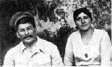
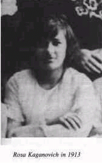
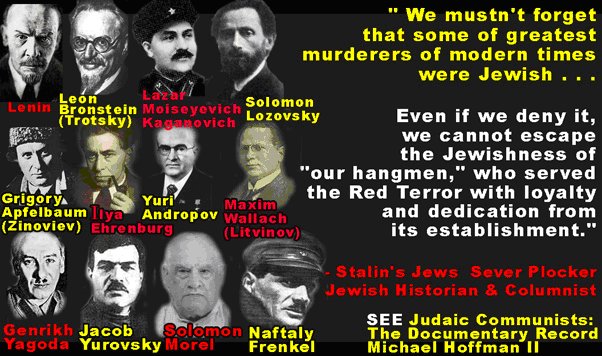
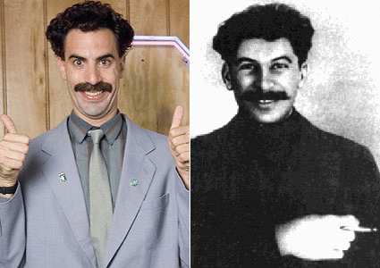

Just as Putin's Jewishness is being covered up even in our time today of never before freedom of information given the World Wide Web, that reveals the level of effort this took. The old Soviet regime removed and then rewrote history to the extent that after high ranking party members were purged on Stalin's orders, the propaganda machine would literally take images of Stalin and those who were purged and remove the purged individuals from the photos, thus removing them from history. Then they never existed. In addition to this, any Soviet citizens who had these same photos or any photos of the purged individuals was warned to alter the photos accordingly. Failure to do so could result in being sentenced to a gulag or face execution.
Just like Putin there is virtually almost nothing about Stalin's origins or life at all, which is a cover up. Only a small phony white-washed history of Stalin was instituted later on to make him appear as a hero to his subjects. It is the very same with Mao Tse-tung, which is very suspicious as well, as the Jews created, built and still run Communist China. [Click here for full article]
Remember, the Jews tried to hide Lenin's Jewishness along with Trotsky's and did the very same with numerous other Jewish communists. But the lying you know...just stopped at Stalin.....Since the Jews where lying about Lenin, Trotsky, Beria and the rest, they are lying about Stalin today as well.
Some things can't lie, as Stalin's strange condition with his arm, which he
told numerous lies his whole life over. Why? Because for Jews in the Eastern
regions he was from, his arm was a common genetic defect, like Tay-Sachs disease
which only affects Jews [which proves they are a racial group]. This affliction
like many others is common to Jews. Stalin also had another birth defect. He had
two interconnected toes on his feet [which he lied again to cover up] which is
common to Jews. Jews carry a reptilian gene that is alien and this is what makes
them Jewish. This recessive gene also has infested the Gentile populace through
interbreeding with Jews. The evidence of this reptilian gene can be seen in the
rare and hideous disease Harlequin Ichthyosis. Here is a link to a YouTube
video. Please be warned if you are sensitive, or impressionable, this video clip
is extremely hideous. The mother and/or her partner obviously carried this
reptilian gene.
This
is what can happen when one race-mixes with the Jews [YouTube Video, approx. 4
minutes]
Stalin's place of birth, Gori, was the home of the largest Georgian Jewish population at that time, with Jewish groups such as the Lezgishvili being one of the largest groups of Jews in the country of Georgia. Something to highlight is the Stalin’s original surname [at birth], which was Djugashvili.
Based from what Eastern Europeans had told him who had escaped the Red Terror
Maurice Pinay wrote:
"In the Georgian language “shvili” means son of, or
son, as in Johnson. “Djuda” means Jew. Therefore Djugashvili means Jewison… Or
Joe Jewison." [1]
With this...
"In the Georgian language “shvili” means
son of, or son, as in Johnson. “Djuda” means Jew. therefore Djugashvili means
Jewison… Or Joe Jewison." As will be explained Juda, Iuda is the word for Jew in
Georgia. Because this is the Jews word for themselves in all languages.
Note the mention of Iranian origin:
Stalin's surname is mentioned by
Buachidze to have possible Persian origins over Georgian surnames: "Genetic
studies carried out on Georgian Jews as part of a wider survey showed close
genetic links with other Jews, and in particular with Iraqi and Persian Jews.
This seemed to prove the historical accounts of Jewish migration from Persia
into Georgia.” [2]
There are Jews in the Caucuses who claim Persian origin. One of the largest Jewish communities in central Asia is the Bukharian Jews who speak a Persian based language and stated they came from Persia. Among their surnames there are very similar ones in meaning to Stalin's, such as Yuda-kov.
Stalin's childhood origins were supposedly Georgian, but the truth is his mother was Ossete, from the Khazarian region." Khazaria was the original home of the Jews in Eastern Europe most of the Ashkenazi Jews are Kharazian. Unlike bogus claims put forth by a certain Jew, Morden genetic tests show the Jews of Kharazian region are racial Jews and not converts.
However Djuga within Georgian has been contested in this meaning by others. Its claimed mainstream meaning of "Steele" is also contested by Georgian writers such as Kita Buachidze. There is a lot of disagreement. The confusion is because this surname is not found as its claimed within the region. Juda- Iuda/iudeveli/iudeuri is Judah, Juda, judaic in Georgian. . Making Jugashvili a Georgian way to state Judah/Juda of which the word Jew is from and used as one in the same within this context. Note the J and I are interchangeable here within Gregorian.
Djuga Jugashvili ~ Judashvili ~ Juda-son, Dzhugashvili ~ Juda-son.
The “d” and “zh are simply used for the J sound in Russian. Dzh is simply the J sound.
"In the Georgian language “shvili” means son of, or son, as in Johnson. “Djuda” means Jew. therefore Djugashvili means Jewison… Or Joe Jewison." D and J are the same. Once again Juda, like the surname Yuda of the Jews, in the central Asia region which the genetic test show the Georgian Jews are from, such as the Bukharian Jewish community.
People where looking at Evrei and ebraeli, which are Georgian derivatives of Hebrew only, not the separate word, Judah/Juda. This was the mistake in claiming this surname didn't mean “Son of a Jew,” based on the separate words of Hebrew only, not Judah. Of course the sources I found that made this bogus claim based on such incorrect terms, were obviously from Jews or people repeating the narrative the Jews themselves created in their USSR. Big surprise. The other word they state for Jew in Georgian "Uriah" is derogatory term like Kike. How many Jews are walking around with the name Kikeson. None, Judah, Juda, Yuda, Yehudi are the universal terms the Jews use from themselves as a nation in all languages from Central Asia to the West.
His Father was a Jew.
This is the real source meaning of what
Pinay concluded from the information he was given from Eastern Europeans. This
is why Stalin changed his surname from the original, in order to hide his
Jewishness. If it really was just Steele in Georgian there was no need to change
it.
I note Stalin's mother was from the peasant class of which the large majority of Georgian Jews were within. The other group of Georgian Jews were rich Jewish rug merchants of which Stalin's mother...."Keke often worked in the houses of rich Jewish traders in Gori, and sometimes took her son along.” [3]
It was these wealthy Jews who actually paid for Stalin's education as a young man. It was a common custom for Jews in the Georgian community to provide educational support to the Jewish youth of their community, and Stalin had the mind for such. Stalin's mother Ekaterina did laundry and housekeeping for David Papisnedov, a local Jew. Their nickname for Stalin was "Soso.” Stalin received Papisnedov at the Kremlin often. It has been believed with great case that the Jew Papisnedov was in fact Stalin's father by some. One way or another his father was a Jew and probably his mother a Khazar Jew too.
Stalin also made anti-Semitism the death penalty in the USSR and was behind the creation of Israel in sending the Jewish NKVD down to help along with money and supplies and was also the first world leader to recognize Israel as the Jewish State in the UN.
In 1931 Soviet Dictator Josef Stalin told the Jewish News Agency in the
United States that:
“Under USSR law active anti-Semites are liable to the
death penalty!”
This move was also to protect the members of the ruling regime from being exposed as Jews, as this was officially hidden. Doing so was the death penalty.
Wikipedia
Aleksandr Isayevich Solzhenitsyn; Russian: Алекса́ндр ....
conduct of the war by Joseph Stalin, whom he called "Khozyain" ("the boss"), and
"Balabos" (Yiddish rendering of Hebrew baal ha-bayiθ for "master of the house").
Literally called Stalin a Hebrew Jewish boss. Thus Solzhenitsyn was
arrested and sent to die in the Gulags.
https://www.whiteheritage.org/showthread.php?tid=646
Stalin spent his career violently liquating all nationalist sentiment from within the Soviet Union. Millions of Ukrainian Nationalists alone went to the death camps of the Gulag, never to return, along with millions others who were murdered by firing squads. But then Stalin just turns around and gives the Jews their own Nationalist region within the USSR and later green lighted the creation of Israel.
May 7, 1934, Stalin created the Jewish state of Birobidjan (or Birobidzhan) in Russia. Birobidjan was the first territorial-administrative entity in the world designated for the Jewish people on the basis of their Jewish nationality. It was located on the border of Russia and China.
Stalin is the perfect example of how Jewish Christianity and Communism work together. He officially reopened the Orthodox Church to build a propaganda base to enforce the Soviet State during the war. They simply put KGB agents in the top ranks of the Clergy. The old churches and clergy where liquidated for being a pro-czarist element along with millions of normal people, nothing else. The church minted thousands of icons depicting Stalin as a saint.
In Putin's regime, key intellectual, philosopher, and Communist creep, Dugin,
who believes that STALINIST North Korea is the ideal society, and praises the
Kims. It is worth noting what Dugin openly admits in an interview he did back in
2012:
"This fits well with the Orthodox critique of Western Christianity.
It is easy to see that the secularization of Western Christianity gives us
liberalism. The secularization of the Orthodox religion gives us
Communism......"
https://www.counter-currents.com/2012/07/interview-with-alexander-dugin/
It is no mistake why Jewish Putin's regime pushes both Stalinism and Orthodox
Christianity- Two sides of the same Jewish coin. The Jews in their writings
state Christians are their slaves and soldiers. A lot has been done to cover up
Stalin's Jewishness and the Jews have promoted all kinds of misinformation on
the subject, because they obviously know what it would mean today if Stalin's
Jewishness was well known. They also tried to cover over another Georgian Jew as
mentioned the close friend of Stalin, Beria. Beria is a deviate of the Jewish
surname Bar. In addition to this, “Beria” is a Jewish word: “This world which is
also called the olam ha-sephiroth, i.e., "the world of the Sephiroth," is the
seat of the Shechinah. From the olam azîla proceeded the olam beria or
"world of creation," in which according to Rabbi Isaac Nasir are the souls of
the saints, all the blessings, the throne of the Deity, and the palaces of all
spiritual and moral perfection.” [From the Jewish Kabalah].
https://www.sacred-texts.com/jud/cab/cab07.htm
Lavrenty Beria was another Georgian Jew who worked directly under Stalin. Beria, [Beria is a derivative of the Jewish name "Bar" "Berry"] was a Karaim Jew. [4]
“Beria demanded that Khrushchev help the Jews who ‘were more repressed than any others by the Germans.’ In this he was taking a risk since Stalin had decreed that all Soviet citizens suffered equally. Molotov forwarded Beria’s order. Khrushchev agreed to help his Abramoviches.” [5]
[Regarding Stalin] “…most of the women around him and many of his closest collaborators, from Yagoda to Mekhlis, were Jewish. Stalin was aware that his regime had to stand against anti-Semitism and we find in his notes a reminder to give a speech about it: he called it ‘cannibalism’ made it a criminal offence, and regularly criticized ant-Semites. Stalin founded a Jewish homeland, Birobizhan, on the Chinese border, and boasted, The Tsar gave the Jews no land, but we will.” [6]
Let’s look at what the Jews themselves where saying back when Stalin was still cool old "Uncle Joe our ally!" to the Western world...
David Weissman, in an article in the B'NAI B'RITH MESSENGER (Mar. 3, 1950), stated that Stalin is a Jew. Stalin spoke Yiddish, & had three Jewish wives.
The Jewish writer Louis Levine, in SOVIET RUSSIA TODAY (Nov. 1946) wrote: "Stalin & the father of his Jewish son-in-law drank Lachaim together in the Kremlin."
Ashkenazic Hebrew luh-khah-yim; Sephardic Hebrew luh-khah-yeem]
Word
Origin
noun, Hebrew.
1. A toast used in drinking to a person's health or
well-being. [7]
Stalin's Jewish background was mentioned in Los Angeles B'nai B'rith Messenger, March 3, 1950, col. 2, p. 5.
A columnist in the Los Angeles B'nai B'rith Messenger, March 3, 1950, col. 2, p. 5 wrote: "A former Soviet general claims that Joseph Stalin is of Jewish ancestry." Many White Russians who fled the Bolsheviks say Stalin was a Jew. One, a captain in the Czar's armies, stated that he knew Stalin in their boyhood and that Stalin's father (Djugashvili) was "a Jewish cobbler
“Lots of sources describe Beria as a Jew, and state, he was talking Yiddish with Stalin's children.” [8]
This makes sense since Stalin spoke Yiddish and was married to Jewesses who spoke the same. That Jewish Beria would communicate with Stalin's children in Yiddish as well.
Stalin frequently attended the Yiddish theater as well.
"In 1921 the GOSET troupe moved into a theater less than a mile from the Kremlin. For 28 years, through purge, terror, and paranoia, they presented world-class theater in Yiddish.” [9]
This is very revealing as the top people in Moscow were Jews who could also speak Yiddish.
Stalin, his wife and children and even Beria where sitting around the dinner table speaking Yiddish with each other.
Stalin's oldest son Yakov [a common Jewish first name] married another Jew, Yulia Meltzer, a well-known Jewish dancer from Odessa who was formerly married to a NKVD officer.
|  |  |
The first was Ekaterina Svanidze who bore him one son, Jacob. His second wife was Kadya Allevijah. She bore him a son Vassili, and a daughter Svetlana. His second wife died under mysterious circumstances, either by committing suicide, or she was murdered by Stalin. His third wife was Rosa Kaganovich, the sister of Lazar Kaganovich, who was the head of Soviet industry. Kaganovich was another Jew. [10]
Stalin's daughter (who in 1967 fled to the USA) then married Lazar's son Mihail i.e. her step-mother's nephew. Svetlana Stalin had a total of four husbands, three of them Jewish.
Stalin's vice-president Molotov was also married to a Jewess, whose brother, Sam Karp, runs an export business in Connecticut. Just to complicate things even more, the Molotov's (half-Jewish) daughter also called Svetlana was engaged to be married to Stalin's son Vassili. [11]
“Stalin was surrounded by Jewesses― from Polina Molotova, and Maria Svanidze
to Poskrebbysheva and Yezhova. Beria’s son reliable on gossip, dubious on
politics, recalled that his father gleefully listed Stalin’s affairs with
Jewesses.”
“These pretty young Jewesses fluttered around Stalin but they
were all of ‘dubious origins.’ They were more interested in clothes, jokes, and
affairs than dialectical materialism. Along with Zhenya Alliluyeva and Maria
Svanidze, they were surely the life and soul of this fatally interwoven society
of Stalin’s family and comrades.” [12]
“When they gathered at his apartment for Svetlana’s eleventh birthday on 28 February 1937, Yakov, Stalin’s gentle Georgian son, brought Julia, his Jewish wife, for the first time. When Stalin finally met Julia, he liked her, made a fuss of her and even fed her with a fork like a loving Georgian father-in-law.” [13]
Stuart Kahan states in his book, “The Wolf of the Kremlin” that Rosa Kaganovich, sister of Lazar Kaganovich, was Stalin's third wife.
Now with all the information in the above, are we supposed to buy that everyone around Stalin was Jewish even his wives and children......but not Stalin? Why? Because the lying Jooz today say so.
Harold Wallace Rosenthal was a senior aide to then-Senator Jacob K. Javits when Rosenthal was murdered in a terrorist attack in Istanbul, Turkey which many believe was a Mossad hit for his revealing too much about the Jewish agenda.
Rosenthal stated:
"When asked why Jews frequently change their names he
said: "Jews are the most intelligent people in the world, so if it benefits them
to change their name they do so. That's all there is to it.” They infest Gentile
society, all the while corrupting it, so while the Jews are benefiting
themselves the dumb goy doesn't realize that these Jews with non-Jew names are
actually Jews.
I know what you are thinking about- Jews in government who use non-Jew names. Well don't be concerned because in the foreseeable future there will be no longer be any presidential power in the United States. The invisible government is gathering strength in that direction."
"Most Jews throughout the world, I'd say more than 90%, know what is really happening to our people. We have communication unequalled anywhere. It is only the jerks, the ignorant, the misinformed and degenerates who can find peace in your society and you bastards hide your sins by donning sheep's clothing. You are the hypocrites, not the Jews, as you say and write about."
"To answer your question, in Russia, there are two distinct governments, one visible, and the other invisible. The visible is made up of different nationalities, whereas the invisible is composed of ALL JEWS. The powerful Soviet Secret Police takes its orders from the invisible government. There are about six to seven million Communists in Soviet Russia, 50% are Jews and 50% are Gentiles, but the Gentiles are never trusted. The Communist Jews are united and trust each other, while the others spy on one another. About every five to six years the secret Jewish Board calls for a purge of the party and many are liquidated."
When asked why, Mr. Rosenthal replied, "Because they begin to understand too much about the Jewish secret government. Russian Communists have a Secret Group Order which consists of Jews only. They rule over everything pertaining to the visible government. It was this powerful organization that was responsible for the secret removal of the center of Communism to Tel Aviv from where all instructions now originate ... the invisible rulers in the Communist countries have a world control over the propaganda and the governments in free countries. We control every media of expression including newspapers, magazines, radio, and television. Even your music! We censor the songs released for publication long before they reach the publishers. Before long we will have complete control of your thinking."
“The Russian based Psychotechnology Research Institute has developed a
program they call Mindreader 2.0 that they say can determine how a person’s
subconscious mind feels about certain photos, and can detect whether people have
a positive feeling or a negative feeling about them. The system uses what is
called Semantic Stimuli Response Measurements Technology, or SSRM Tek, that
supposedly detects a person’s involuntary response to subliminal messages. It
has been reported that the Department of Homeland Security has visited the
Institute to learn more about the technology to determine whether it may be of
use for screening passengers before they board an airline.”
“The Mindreader
system 2.0 flashes a quick image on a screen so fast that a person doesn’t
consciously recognize it, and then they are asked to press a button rating their
feeling either favorable or unfavorably. If the image is of Osama Bin Laden, for
example, and they press a favorable button, then they are flagged as a potential
terrorist.” [14]
“In January 2009, the TV newsmagazine 60 Minutes aired a segment titled “Mind Reading” that showed new technology being developed at Carnegie Mellon University that can literally read your mind. The segment featured neuro scientist Marcel Just and his colleague Tom Mitchell who had developed one of these systems. Marcel Just didn’t want to call it mind reading, and instead insisted it was ‘thought identification’ instead.” [15]

Can we draw from this the conclusion that Stalin's government has shaken itself free of Jewish control and has become a National Government? Certainly no opinion could be more erroneous or more dangerous than that... The Jews are yielding ground at some points and are sacrificing certain lives, in the hope that by clever arrangements they may succeed in saving their threatened power. They still have in their hands the principal levers of control. The day they will be obliged to give them up, the Marxist edifice will collapse like a house of cards.
To prove that, though Jewish domination is gravely compromised, the Jews are still in control, we have only to take the list of the highly placed officials of the Red State. The two brother-in-laws of Stalin, Lazarus and Moses Kaganovich, are ministers of Transport and of Industry, respectively; Litvinoff (Wallach-Jeyer- Finkelstein) still directs the foreign policy of the Soviet Union...The post of ambassador at Paris is entrusted to the Jew, Louritz, in place of the Russian, Potemkine, who has been recalled to Moscow. If the ambassador of the U.S.S.R. in London, the Jew Maiski, seems to have fallen into disgrace, it is his fellow-Jew, Samuel Kagan, who represents U.S.S.R. on the London Non-Intervention Committee. A Jew named Yureneff (Gofmann) is the ambassador of the U.S.S.R. at Berlin...Since the beginning of the discontent in the Red Army the guard of the Kremlin and the responsibility for Stalin's personal safety is confided to the Jewish colonel, Jacob Rapaport.
All the internment camps, with their population of seven million Russians, are in charge of the Jew, Mendel Kermann, aided by the Jews, Lazarus Kagan and Semen Firkin. All the prisons of the country, filled with working men and peasants, are governed by the Jew, Kairn Apeter. The News-Agency and the whole Press of the country are controlled by the Jews...The clever system of double control, organized by the late Jankel Gamarnik, head of the political staff of the army, is still functioning, so far as we can discover. I have before me the list of these highly placed Jews, more powerful than the Bluchers and the Egonoffs, to whom the European Press so often alludes. Thus the Jew, Aronchtam, whose name is never mentioned, is the Political Commissar of the Army in the Far East: the Jew Rabinovitch is the Political Commissar of the Baltic Fleet, etc.
All this goes to prove that Stalin's government, in spite of all its attempts at camouflage, has never been, and will never be, a national government. Israel will always be the controlling power and driving force behind it. Those who do not see that the Soviet Union is not Russian must be blind." (The Rulers of Russia, Denis Fahey, pp. 40-42)
Sometimes the Jews just can't hide their race no matter how they try. Take
the Jew Sasha Cohen give a standard hair style and moustache of the Eastern
regions of the day and........

____________________________________________________________
References:
[1] Maurice Pinay 'The Plot against the Church'
[2] https://en.wikipedia.org/wiki/Georgian_Jews
[3] https://en.wikipedia.org/wiki/Ketevan_Geladze
[4] Commissar: The Life and Death of Lavrenty Pavlovich Beria by Thaddeus Wittlin © 1972
[5] Stalin: Court of the Red Tsar by Simon Sebag Montefiore © 2003
[6] Ibid.
[8] https://en.metapedia.org/wiki/Lavrenty_Beria
[9] https://www.yivo.org/blog/index.php/2015 ... lin-laugh/
[7] https://dictionary.reference.com/browse/l'chaim
[10] https://en.wikipedia.org/wiki/Lazar_Kaganovich
[11] Jew Watch.com
[12]
Stalin: Court of the Red Tsar by Simon Sebag Montefiore © 2003
[13] Ibid.
[14] Big Brother: The Orwellian Nightmare Come True by Mark Dice © 2011
[15] Ibid.
Christianity, Communism, the Jews and the Bible
Mind Control Programming and the Bible
The
Jewish Enforced Microchip Implants PDF
The above article is extremely
serious. This is what the enemy race of alien Greys have, a microchip implant
that controls their emotions, thoughts and everything else. The article contains
numerous reference links along with excerpts that prove this is in the VERY near
future for the entire world and is already happening.